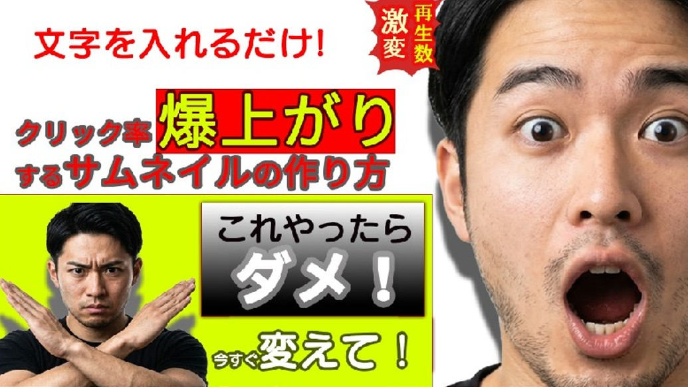

YouTube動画サムネイル制作
Graphic Design / Marketing

概要
既存のハウツー系動画のクリック率（CTR）を改善するためのサムネイルデザイン案。視聴者のインサイトを分析し、0.5秒で内容を理解させる構成を目指しました。
制作時期
2026年3月
使用ツール
Photoshop / Illustrator
制作時間
約3時間（構成検討含む）
デザインのこだわり（Marketing Point）
- 視覚的インパクト： 右側に大きく配置した人物の表情で「驚き」を表現し、人間の「顔を認識する習性」を利用して視線をキャッチします。
- 情報の優先順位： 「爆上がり」というベネフィットを最も目立つ赤×黄の配色で中央に配置。次に「ダメ！」という禁止事項で強い引きを作っています。
- モバイル最適化： スマートフォンの小さな画面でも文字が潰れないよう、極太のゴシック体を使用し、縁取り（境界線）で可読性を高めました。
制作プロセス
1. ターゲット（動画投稿者）の悩み（再生数が伸びない）をマインドマップで整理。
2. 「成功」と「失敗」の対比構造をレイアウト案として作成。
3. 視認性を重視した配色とタイポグラフィの選定。